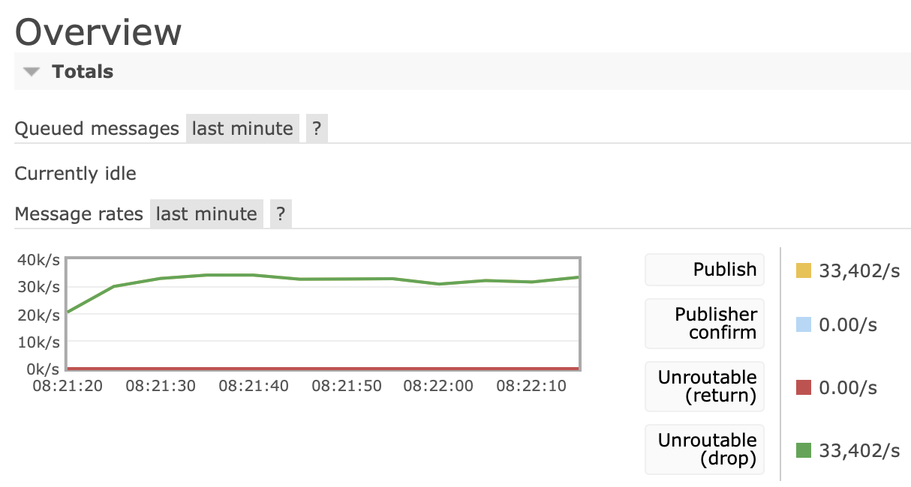
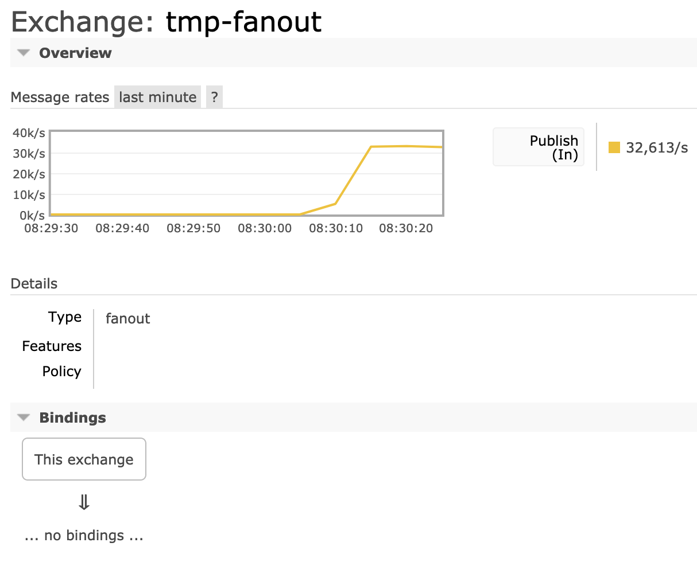

Publishers
Overview
This guide covers various topics related to publishers:
- The basics
- Publisher lifecycle
- Protocol Differences
- Message properties and delivery metadata
- Publisher-side data safety topics (connection recovery, publisher confirms)
- Exception Handling
- Effects of Resource Alarms
- Unroutable Message Handling
- Metrics relevant for publishers
- Concurrency Consideration
- How to temporarily block all publishers
- How to troubleshoot common issues with publishers
and more.
The guide focuses on AMQP 0-9-1 and mentions key protocol-specific differences with other protocols supported by RabbitMQ: AMQP 1.0, MQTT and STOMP.
Terminology
The term "publisher" means different things in different contexts. In general in messaging a publisher (also called "producer") is an application (or application instance) that publishes (produces) messages. The same application can also consume messages and thus be a consumer at the same time.
Messaging protocols also have the concept of a lasting subscription for message delivery. Subscription is one term commonly used to describe such entity. Consumer is another. Messaging protocols supported by RabbitMQ use both terms but RabbitMQ documentation tends to prefer the latter.
The Basics
RabbitMQ is a messaging broker. It accepts messages from publishers, routes them and, if there were queues to route to, stores them for consumption or immediately delivers to consumers, if any.
Publishers publish to a destination that varies from protocol to protocol. In AMQP 0-9-1, publishers publish to exchanges. In AMQP 1.0, publishing happens on a link. In MQTT, publishers publish to topics. Finally, STOMP supports a variety of destination types: topics, queues, AMQP 0-9-1 exchanges. This is covered in more details in the protocol-specific differences section.
A publish message has to be routed to a queue (topic, etc). The queue (topic) may have online consumers. When the message is successfully routed to a queue and there is a consumer online that can accept more deliveries, the message will be sent to the consumer.
An attempt to publish to a non-existent queue (topic) will result in a channel-level exception with the code of 404 Not Found and render the channel it was attempted on to be closed.
Publisher Lifecycle
Publishers are often long lived: that is, throughout the lifetime of a publisher it publishes multiple messages. Opening a connection or channel (session) to publish a single message is not optimal.
Publishers usually open their connection(s) during application startup. They often would live as long as their connection or even application runs.
Publishers can be more dynamic and begin publishing in reaction to a system event, stopping when they are no longer necessary. This is common with WebSocket clients used via Web STOMP and Web MQTT plugins, mobile clients and so on.
Protocol Differences
The process of publishing messages is quite similar in every protocol RabbitMQ supports. All four protocols allow the user to publish a message which has a payload (body) and one or more message properties (headers).
All four protocols also support an acknowledgement mechanism for publishers which allows the publishing application to keep track of the messages that have or haven't been successfully accepted by the broker, and continue publishing the next batch or retry publishing the current one.
The difference typically have more to do with the terminology used than the semantics. Message properties also vary from protocol to protocol.
AMQP 0-9-1
In AMQP 0-9-1, publishing happens on a channel to an exchange. The exchange uses a routing topology set up by defining bindings between one or more queues and the exchange, or source exchange and destination exchange. Successfully routed messages are stored in queues.
The role of each entity is covered in the AMQP 0-9-1 concepts guide.
Publisher confirms is the publisher acknowledgement mechanism.
There are several common types of publisher errors that are handled using different protocol features:
- Publishing to a non-existent exchange results in a channel error, which closes the channel so that no further publishing (or any other operation) is allowed on it.
- When a published message cannot be routed to any queue (e.g. because there are no bindings defined for the target exchange), and the publisher set the mandatory message property to false (this is the default), the message is discarded or republished to an alternate exchange, if any.
- When a published message cannot be routed to any queue, and the publisher set the mandatory message property to true, the message will be returned to it. The publisher must have a returned message handler set up in order to handle the return (e.g. by logging an error or retrying with a different exchange)
AMQP 1.0
In AMQP 1.0 publishing happens within a context of a link.
MQTT
In MQTT, messages are published on a connection to a topic. The server side MQTT connection process routes messages via the topic exchange to queues.
When publisher chooses to use QoS 1, published messages are acknowledged by RabbitMQ using a PUBACK packet.
Publishers can provide a hint to the server that the published message on the topic must be retained (stored for future delivery to new subscribers). Only the latest published message for each topic can be retained.
The MQTT 5.0 PUBACK packet includes a reason code that tells the publisher whether publishing was successful. Reason codes returned by RabbitMQ include:
- 0 - Success: All the queues the message was routed to successfully accepted the message.
- 16 - No matching subscribers: RabbitMQ could not route the message to any queue (because there are no bindings defined to the topic exchange).
- 131 - Implementation specific error: RabbitMQ rejected the message (for example when a target classic queue is unavailable).
In MQTT 3.1 and 3.1.1, other than closing the connection, there is no mechanism by which the server can communicate a publishing error to the client.
See the MQTT and MQTT-over-WebSockets guides to learn more.
STOMP
STOMP clients publish on a connection to one or more destinations which can have different semantics in case of RabbitMQ.
STOMP provides a way for the server to communicate an error in message processing back to the publisher. Its variation of publisher acknowledgements is called receipts, which is a feature clients enable when publishing.
See the STOMP guide, STOMP-over-WebSockets and the STOMP 1.2 spec to learn more.
Routing
AMQP 0-9-1
Routing in AMQP 0-9-1 is performed by exchanges. Exchanges are named routing tables. Table entries are called bindings. This is covered in more detail in the AMQP 0-9-1 concepts guide.
There are several built-in exchange types:
- Topic
- Fanout
- Direct (including the default exchange)
- Headers
The first three types are covered with examples in the tutorials.
More exchange types can be provided by plugins. Consistent hashing exchange, random routing exchange, internal event exchange and delayed message exchange are exchange plugins that ship with RabbitMQ. Like all plugins they must be enabled before they can be used.
Unroutable Message Handling
Clients might attempt to publish messages to destinations (exchanges, topics, queues) that do not exist. This section covers on how different protocols different in handling of such cases.
RabbitMQ collects and exposes metrics that can be used to detect publishers that publish unroutable messages.
AMQP 0-9-1
When a published message cannot be routed to any queue (e.g. because there are no bindings defined for the target exchange), and the publisher set the mandatory message property to false (this is the default), the message is discarded or republished to an alternate exchange, if any.
When a published message cannot be routed to any queue, and the publisher set the mandatory message property to true, the message will be returned to it. The publisher must have a returned message handler set up in order to handle the return (e.g. by logging an error or retrying with a different exchange).
Alternate Exchanges is an AMQP 0-9-1 exchange feature that lets clients handle messages that an exchange was unable to route (i.e. either because there were no bound queues or no matching bindings). Typical examples of this are detecting when clients accidentally or maliciously publish messages that cannot be routed "or else" routing semantics where some messages are handled specially and the rest by a generic handler.
MQTT
Publishing to a new topic would set up a queue for it. Different topic/QoS level combinations will use different queues with different properties. Publishers and consumers therefore must use the same QoS level.
STOMP
STOMP supports multiple different destinations, including those that assume pre-existing topology.
- /topic: publishing to a topic that has not had a consumer will result in dropped messages. First subscriber on the topic will declare a queue for it.
- /exchange: target exchange must exist, otherwise the server would report an error
- /amq/queue: target queue must exist, otherwise the server would report an error
- /queue: publishing to a non-existent queue would set it up
- /temp-queue: publishing to a non-existent temporary queue would set it up
Metrics
There's a metric for unroutable dropped messages:

In the example above, all published messages are dropped as unroutable (and non-mandatory).
Message Properties
AMQP 0-9-1
Every delivery combines message metadata and delivery information. Different client libraries use slightly different ways of providing access to those properties. Typically delivery handlers have access to a delivery data structure.
The following properties are delivery and routing details; they are not message properties per se and set by RabbitMQ at routing and delivery time:
| Property | Type | Description |
| Delivery tag | Positive integer | Delivery identifier, see Confirms. |
| Redelivered | Boolean | Set to `true` if this message was previously delivered and requeued |
| Exchange | String | Exchange which routed this message |
| Routing key | String | Routing key used by the publisher |
| Consumer tag | String | Consumer (subscription) identifier |
The following are message properties. Most of them are optional. They are set by publishers at the time of publishing:
| Property | Type | Description | Required? |
| Delivery mode | Enum (1 or 2) | 2 for "persistent", 1 for "transient". Some client libraries expose this property as a boolean or enum. | Yes |
| Type | String | Application-specific message type, e.g. "orders.created" | No |
| Headers | Map (string => any) | An arbitrary map of headers with string header names | No |
| Content type | String | Content type, e.g. "application/json". Used by applications, not core RabbitMQ | No |
| Content encoding | String | Content encoding, e.g. "gzip". Used by applications, not core RabbitMQ | No |
| Message ID | String | Arbitrary message ID | No |
| Correlation ID | String | Helps correlate requests with responses, see tutorial 6 | No |
| Reply To | String | Carries response queue name, see tutorial 6 | No |
| Expiration | String | Per-message TTL | No |
| Timestamp | Timestamp | Application-provided timestamp | No |
| User ID | String | User ID, validated if set | No |
| App ID | String | Application name | No |
Message Types
The type property on messages is an arbitrary string that helps applications communicate what kind of message that is. It is set by the publishers at the time of publishing. The value can be any domain-specific string that publishers and consumers agree on.
RabbitMQ does not validate or use this field, it exists for applications and plugins to use and interpret.
Message types in practice naturally fall into groups, a dot-separated naming convention is common (but not required by RabbitMQ or clients), e.g. orders.created or logs.line or profiles.image.changed.
If a consumer gets a delivery of an unknown type it is highly advised to log such events to make troubleshooting easier.
Content Type and Encoding
The content (MIME media) type and content encoding fields allow publishers communicate how message payload should be deserialized and decoded by consumers.
RabbitMQ does not validate or use these fields, it exists for applications and plugins to use and interpret.
For example, messages with JSON payload should use application/json. If the payload is compressed with the LZ77 (GZip) algorithm, its content encoding should be gzip.
Multiple encodings can be specified by separating them with commas.
Publisher Acknowledgements (Confirms) and Data Safety
Ensuring data safety is a collective responsibility of applications, client libraries and RabbitMQ cluster nodes. This section covers a number of data safety-related topics.
Networks can fail in less-than-obvious ways and detecting some failures takes time. Therefore a client that's written a protocol frame or a set of frames (e.g. a published message) to its socket cannot assume that the message has reached the server and was successfully processed. It could have been lost along the way or its delivery can be significantly delayed.
To remedy this, a publisher-side confirmation mechanism was developed. It mimics the consumer acknowledgements mechanism already present in the protocol.
Strategies for Using Publisher Confirms
Publisher confirms provide a mechanism for application developers to keep track of what messages have been successfully accepted by RabbitMQ. There are several commonly used strategies for using publisher confirms:
- Publish messages individually and use streaming confirms (asynchronous API elements: confirm event handlers, futures/promises and so on)
- Publish a batch of messages and wait for all outstanding confirms
- Publish messages individually and wait for it to be confirmed before proceeding with publishing. This option is highly discouraged due to its strong negative effects on publisher throughput
They vary in throughput effects and ease of use.
Streaming Confirms
Most client libraries usually provide a way for developers to handle individual confirmations as they arrive from the server. The confirms will arrive asynchronously. Since publishing is also inherently asynchronous in AMQP 0-9-1, this option allows for safe publishing with very little overhead. The algorithm is usually similar to this:
- Enable publisher confirms on a channel
- For every published message, add a map entry that maps current sequence number to the message
- When a positive ack arrives, remove the entry
- When a negative ack arrives, remove the entry and schedule its message for republishing (or something else that's suitable)
In RabbitMQ Java client, confirm handler is exposed via the ConfirmCallback and ConfirmListener interfaces. One or more listeners have to be added to a channel.
Batch Publishing
This strategy involves publishing batches of messages and awaiting for the entire batch to be confirmed. Retries are performed on batches.
- Enable publisher confirms on a channel
- For every published message batch, await for all outstanding confirms
- When all confirms come in positive, publish the next batch
- If there are negative confirms or timeout hits, republish the entire batch or only the relevant messages
Some clients provide convenience API elements for waiting for all outstanding confirms. For example, in the Java client there is Channel#waitForConfirms(timeout).
Since this approach involves waiting for confirms, it will have negative effects on publisher throughput. The larger the batch, the smaller the effect will be.
Publish-and-Wait
This strategy can be considered an anti-pattern and is documented primarily for completeness. It involves publishing a message and immediately waiting for the outstanding acknowledgement to arrive. It can be thought of as the above strategy with batch publishing where batch size equals to one.
This approach will have a very significant negative effect on throughput and is not recommended.
Recovery from Connection Failures
Network connection between clients and RabbitMQ nodes can fail. How applications handle such failures directly contributes to the data safety of the overall system.
Several RabbitMQ clients support automatic recovery of connections and topology (queues, exchanges, bindings, and consumers): Java, .NET, Bunny are some examples.
Other clients do not provide automatic recovery as a feature but do provide examples of how application developers can implement recovery.
The automatic recovery process for many applications follows the following steps:
- Reconnect to a reachable node
- Restore connection listeners
- Re-open channels
- Restore channel listeners
- Restore channel basic.qos setting, publisher confirms and transaction settings
After connections and channels are recovered, topology recovery can start. Topology recovery includes the following actions, performed for every channel
- Re-declare exchanges (except for predefined ones)
- Re-declare queues
- Recover all bindings
- Recover all consumers
Exception Handling
Publishers generally can expect two types of exception:
- A network I/O exception due to a failed write or timeout
- An acknowledgement delivery timeout
Note that "exception" here means an error in the general sense; some programming languages do not have exceptions at all so clients there would communicate the error differently. The discussion and recommendations in this section should apply equally to most client libraries and programming languages.
The former type of exception can occur immediately during a write or with a certain delay. This is because certain types of I/O failures (e.g. to high network congestion or packet drop rate) can take time to detect. Publishing can continue after the connection recovers but if the connection is blocked due to an alarm, all further attempts will fail until the alarm clears. This is covered in more details below in the Effects of Resource Alarms section.
The latter type of exception can only happen when the application developer provides a timeout. What timeout value is reasonable for a given application is decided by the developer. It should not be lower than the effective heartbeat timeout.
Effects of Resource Alarms
When a cluster node has a resource alarm in effect, all connections in the cluster that attempt to publish a message will be blocked until all alarms across the cluster clear.
When a connection is blocked, no more data sent by this connection will be read, parsed or processed on the connection. When a connection is unblocked, all client traffic processing resumes.
Compatible AMQP 0-9-1 clients will be notified when they are blocked and unblocked.
Writes on a blocked connection will time out or fail with an I/O write exception.
Metrics
Metric collection and monitoring are as important for publishers as they are for any other application or component in an application. Several metrics collected by RabbitMQ are of particular interest when it comes to publishers:
- Outgoing message rate
- Publisher confirmation rate
- Connection churn rate
- Channel churn rate
- Unroutable dropped message rate
- Unroutable returned message rate
The publishing and confirmation rates are mostly self-explanatory. The churn rates are so important because they help detect applications that do not use connections or channels optimally and thus offer sub-optimal publishing rates and waste resources.
Unroutable message rates can help detect applications that publish messages that cannot be routed to any queue. For example, this may suggest a misconfiguration.
Client libraries may also collect metrics. RabbitMQ Java client is one example. These metrics can provide insight into application-specific architecture (e.g. what publishing component publishes unroutable messages) that RabbitMQ nodes cannot infer.
Concurrency Considerations
Concurrency topics are all about client library implementation specifics but some general recommendations can be provided. In general, publishing on a shared "publishing context" (channel in AMQP 0-9-1, connection in STOMP, session in AMQP 1.0 and so on) should be avoided and considered unsafe.
Doing so can result in incorrect framing of data frames on the wire. That leads to connection closure.
With a small number of concurrent publishers in a single application using one thread (or similar) per publisher is the optimal solution. With a large number (say, hundreds or thousands), use a thread pool.
Temporarily Blocking Publishing
It is possible to effectively block all publishing in a cluster by setting the memory high watermark to 0, thus making a resource alarm to go off immediately:
rabbitmqctl set_vm_memory_high_watermark 0
Troubleshooting Publishers
This section covers a number of common issues with publishers, how to identify and address them. Failures in distributed systems come in many shapes and forms, so this list is by no means extensive.
Connectivity Failures
Like any client, a publisher has to successfully connect and successfully authenticate first.
The number of potential connectivity issues is pretty broad and has a dedicated guide.
Authentication and Authorisation
Like any client, a publisher can fail to authenticate or don't have the permissions to access their target virtual host, or publish to the target exchange.
Such failures are logged by RabbitMQ as errors.
See the sections on troubleshooting of authentication and authorisation in the Access Control guide.
Connection Churn
Some applications open a new connection for every message published. This is highly inefficient and not how messaging protocols were designed to be used. Such condition can be detected using connection metrics.
Prefer long lived connections when possible.
Connection Interruption
Network connections can fail. Some client libraries support automatic connection and topology recovery, others make it easy to implement connection recovery in application code.
When connection is down, no publishes will go through or be internally enqueued (delayed) by clients. In addition, messages that were previously serialised and written to the socket are not guaranteed to reach the target node. It is therefore critically important for publishers that need reliable publishing and data safety to use Publisher Confirms to keep track of what publishes were confirmed by RabbitMQ. Messages that were not confirmed should be considered undelivered after a period of time. Those messages can be republished if it's safe to do so for the application. This is covered in tutorial 7 and the Data Safety section in this guide.
See Recovery from Network Connection Failures for details.
Routing Issues
A publisher can be successfully connected, authenticated and granted the permissions to publish to an exchange (topic, destination). However, it is possible that such messages would not be routed to any queues or consumers. This can be due to
- A configuration mismatch between applications, e.g. topics used by the publishers and consumers do not match
- Publisher misconfiguration (exchange, topic, routing key are not what they should be)
- For AMQP 0-9-1, missing bindings on the target exchange
- A resource alarm is in effect: see the section below
- Network connection has failed and the client did not recover: see the section above
Inspecting the topology and metrics usually helps narrow the problem quickly. For example, the individual exchange page in management UI can be used to confirm that there is inbound message activity (ingress rate above zero) and what the bindings are.
In the following example the exchange has no bindings, so no messages will be routed anywhere:

Bindings can also be listed using rabbitmq-diagnostics:
# note that the implicit default exchange bindings won't # be listed as of RabbitMQ 3.8 rabbitmq-diagnostics list_bindings --vhost "/" => Listing bindings for vhost /...
In the example above the command yields no results.
Starting with RabbitMQ 3.8, there's a new metric for unroutable dropped messages:
In the example above, all published messages are dropped as unroutable (and non-mandatory). See the Unroutable Message Handling section in this guide.
Cluster-wide and connection metrics as well as server logs will help spot a resource alarm in effect.
Resource Alarms
When a resource alarm is in effect, all connections that publish will be blocked until the alarm clears. Clients can opt-in to receive a notification when they are blocked. Learn more in the Resource Alarms guide.
Protocol Exceptions
With some protocols, such as AMQP 0-9-1 and STOMP, publishers can run into a condition known as a protocol error (exception). For example, publishing to a non-existent exchange or binding an exchange to a non-existent exchange will result in a channel exception and will render the channel closed. Publishing is not possible on a closed channel. Such events are logged by the RabbitMQ node the publisher was connected to. Failed publishing attempts will also result in client-side exceptions or errors returned, depending on the client library used.
Concurrent Publishing on a Shared Channel
Concurrent publishing on a shared channel is not supported by client libraries. Learn more in the Concurrency Considerations section.
Getting Help and Providing Feedback
If you have questions about the contents of this guide or any other topic related to RabbitMQ, don't hesitate to ask them using GitHub Discussions or our community Discord server.
Help Us Improve the Docs <3
If you'd like to contribute an improvement to the site, its source is available on GitHub. Simply fork the repository and submit a pull request. Thank you!
Copyright © 2005-2023 Broadcom. All Rights Reserved. The term “Broadcom” refers to Broadcom Inc. and/or its subsidiaries.
Terms of Use •
Privacy •
Trademark Guidelines •
Your California Privacy Rights •
Cookie Settings